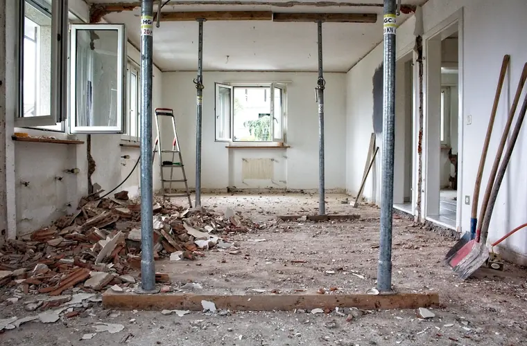
Ubah suai rumah
Runtuhan simen, jubin lama, kayu, plaster siling dan pintu tingkap yang dibuang masa renovasi.
Beroperasi dari Dengkil · Seluruh Lembah Klang
Sisa ubah suai, sisa binaan atau barang lama bertimbun? Satu tong di lokasi anda selesaikan semuanya. Harga dari RM245, siap termasuk penghantaran, kutipan dan pelupusan.
Syarikat berdaftar (NS0292662-V) · atau hubungi terus 013-398 5009
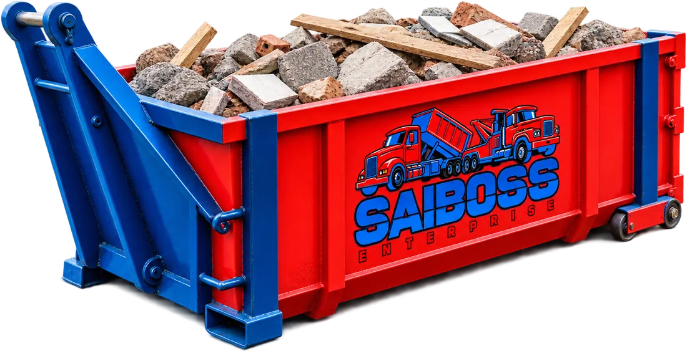
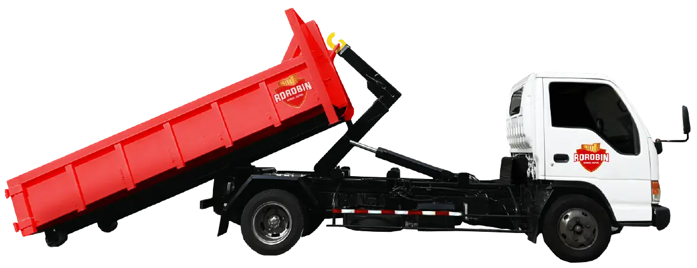
Pernah membekal untuk
Kegunaan
Tak perlu upah lori atau berulang-alik ke pusat pelupusan. Isi sahaja tong sepanjang tempoh sewaan, dan kami angkut semuanya sekali gus. Ini kerja yang paling kerap kami uruskan:

Runtuhan simen, jubin lama, kayu, plaster siling dan pintu tingkap yang dibuang masa renovasi.
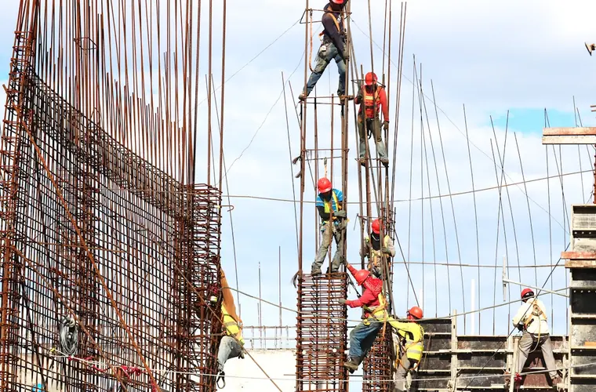
Konkrit, batu-bata dan sisa kerja tanah. Kontraktor boleh atur tong ikut jadual projek.
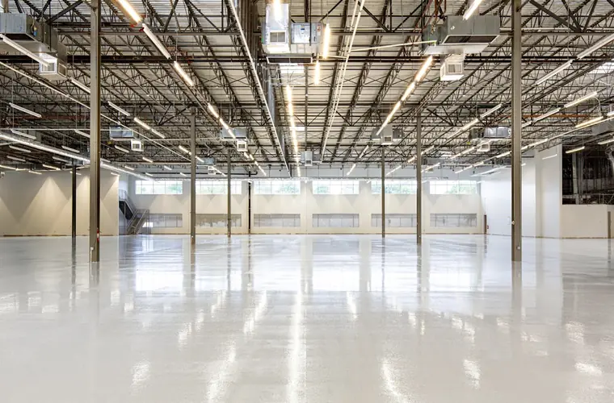
Sisa pengeluaran, palet dan pembungkusan pukal dari premis perindustrian, dengan kutipan berjadual.
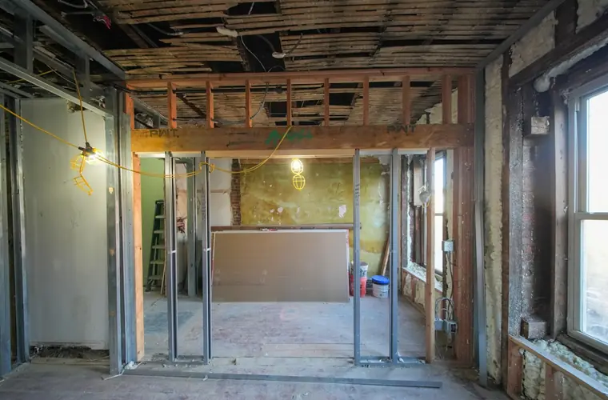
Sisa ubah suai ruang niaga, kabinet dan perabot lama masa fit-out kedai, pejabat, hotel atau restoran.
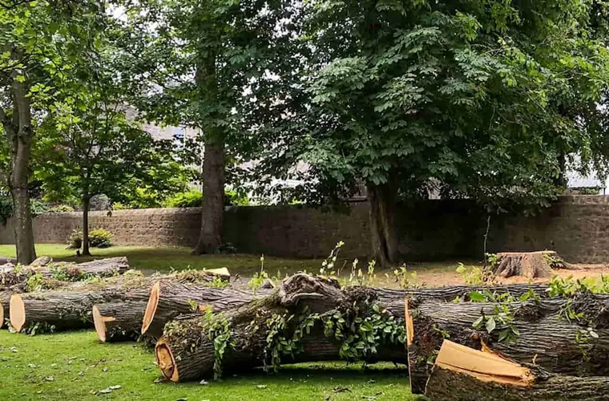
Dahan, batang pokok dan sisa kebun selepas kerja landskap atau pembersihan tanah.
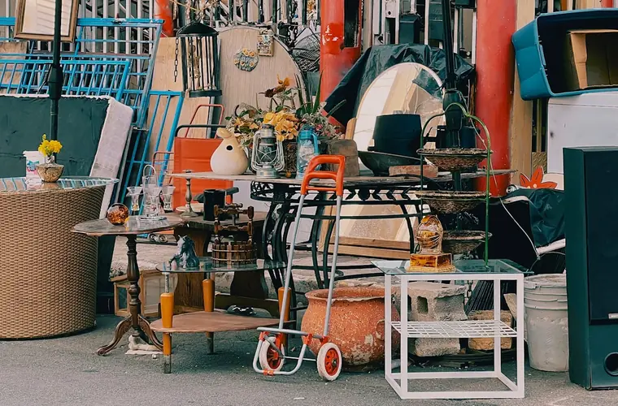
Perabot, tilam dan barangan pukal sebelum anda pindah, menyewa atau menjual hartanah.
Perlu diingat: kami tak terima bahan kimia, bahan mudah terbakar atau sisa berbahaya. Tak pasti dengan sisa anda? Tanya dulu di WhatsApp.
Saiz & harga
Semua harga dah termasuk penghantaran, kutipan dan pelupusan sisa dalam kawasan liputan, untuk sewaan sehingga 7 hari. Harga muktamad kami sahkan ikut kawasan anda sebelum tong dihantar.
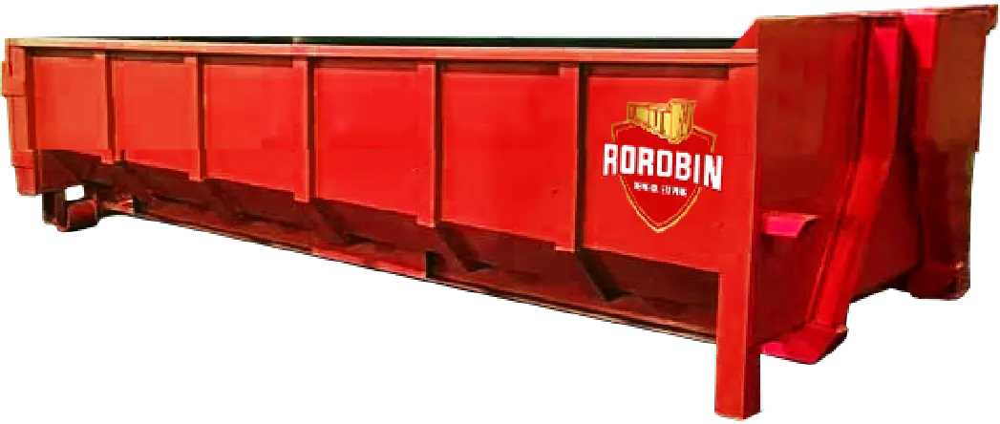
2 × 6 × 12 kaki · muatan ±4 meter padu
RM245 harga bermula
Termasuk hantar, kutip & buang sisa
Paling popular
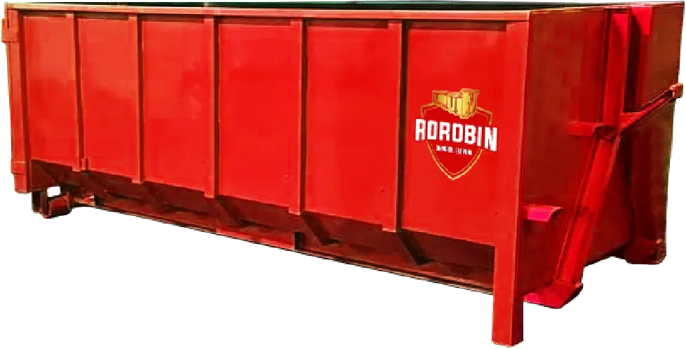
4 × 6 × 12 kaki · muatan ±8 meter padu
RM350 harga bermula
Termasuk hantar, kutip & buang sisa
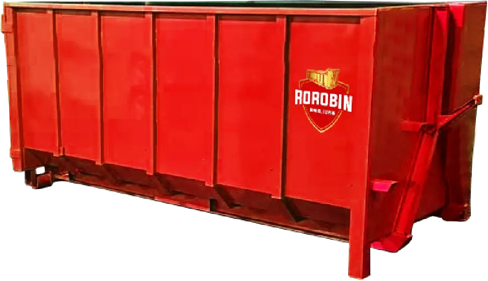
5 × 6 × 12 kaki · muatan ±10 meter padu
RM490 harga bermula
Termasuk hantar, kutip & buang sisa
Hantar gambar sisa atau tapak anda di WhatsApp. Kami cadangkan saiz yang betul, supaya anda tak bayar lebih daripada yang perlu.
Cara sewa
Tiada borang panjang, tiada panggilan berulang-ulang. Semuanya selesai dalam satu perbualan WhatsApp.
Pilih saiz tong, kawasan dan tempoh sewaan melalui borang tempahan atau terus di WhatsApp. Kami balas dengan harga muktamad.
Tong sampai di lokasi anda pada tarikh yang dijanjikan. Anda cuma perlukan ruang rata lebih kurang 12 kaki.
Dah siap? Kami kutip tong bersama semua sisa dan bawa terus ke pelupusan. Anda tak perlu angkat apa-apa.
Kenapa Saiboss
Kami uruskan sendiri setiap penghantaran dan kutipan dari pangkalan kami di Dengkil. Sebab itu urusan cepat, dan harga tak berselindung.
Penghantaran, kutipan dan pelupusan sisa dah dikira dalam harga sewaan. Anda sahkan harga muktamad di WhatsApp sebelum tong dihantar.
Kedudukan tengah untuk Cyberjaya, Putrajaya, Bangi, KLIA dan seluruh koridor selatan Lembah Klang, jadi laluan penghantaran pendek dan senang diatur.
Rorobin Dengkil Empire (NS0292662-V), biasa berurusan dengan pihak berkuasa tempatan untuk kutipan dan bekalan tong.
Satu perbualan WhatsApp sahaja: pilih tong, sahkan harga, tetapkan tarikh. Lima minit selesai, tanpa perlu daftar akaun.
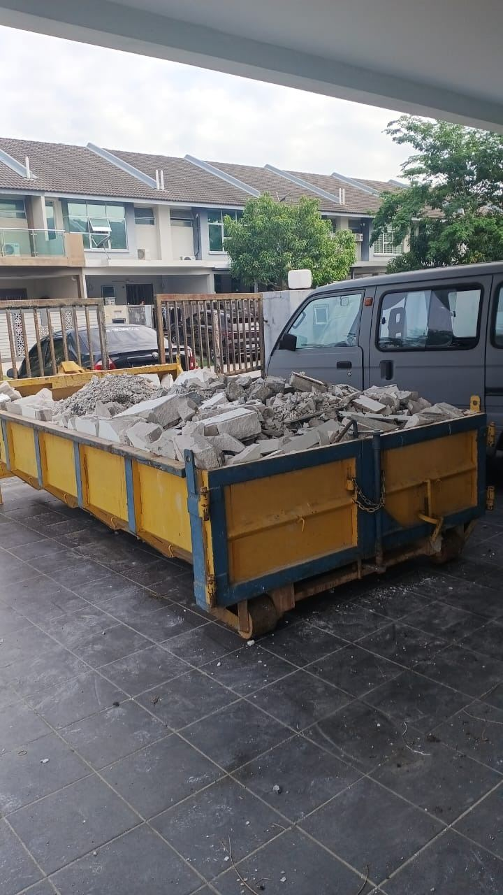
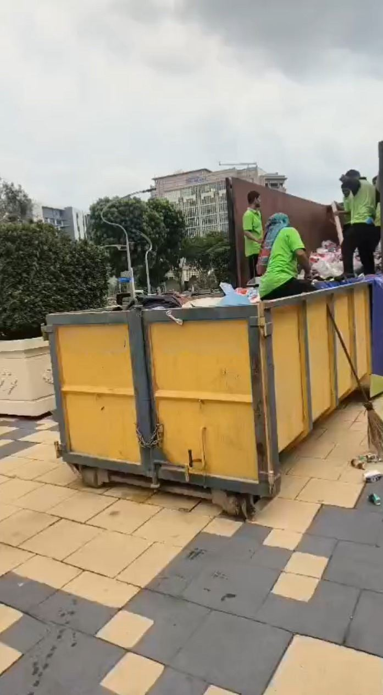
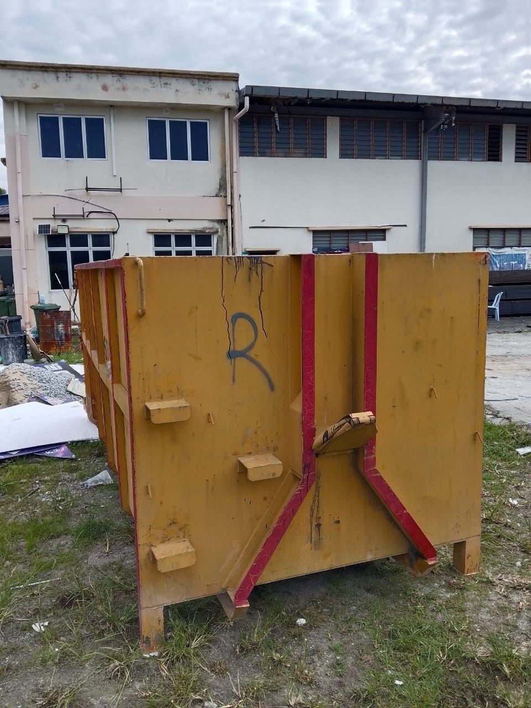
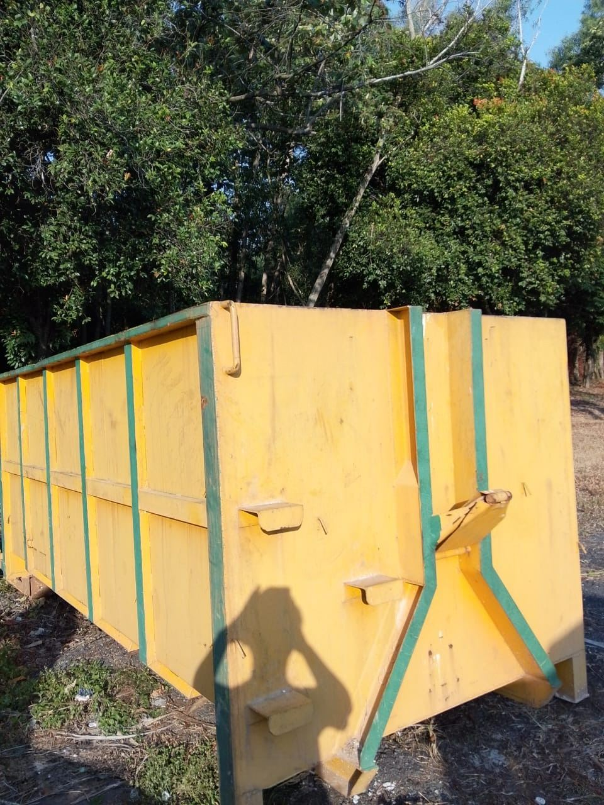
Kawasan liputan
Kami hantar dan kutip tong roro terus ke lokasi anda di kawasan-kawasan berikut.
Kawasan anda tiada dalam senarai? WhatsApp kami dan kemungkinan besar kami masih boleh bantu.
Soalan lazim
Jawapan kepada soalan yang paling kerap pelanggan tanya.
Harga bermula RM245 untuk tong kecil, RM350 untuk tong sederhana dan RM490 untuk tong besar. Semuanya dah termasuk penghantaran dan kutipan dalam kawasan liputan kami. Harga muktamad kami sahkan di WhatsApp ikut kawasan anda, sebelum tong dihantar.
Tong kecil (±4 meter padu) untuk ubah suai kecil dan buang perabot; tong sederhana (±8 meter padu) untuk ubah suai penuh rumah atau premis perniagaan; tong besar (±10 meter padu) untuk tapak binaan, perobohan dan sisa industri. Tak pasti? Hantar gambar sisa anda, kami cadangkan saiz yang betul.
Sisa binaan dan perobohan, sisa ubah suai, sampah industri dan komersial, sampah domestik, perabot lama, sisa besar isi rumah, serta pokok dan sisa taman. Bahan kimia, bahan mudah terbakar dan sisa berbahaya tidak diterima.
Dari 1 hingga 7 hari. Pilih bilangan hari semasa tempahan, dan kami kutip tong pada tarikh itu. Perlukan lebih lama? Bagitahu kami awal-awal di WhatsApp.
Betul. Harga sewaan dah termasuk penghantaran tong ke lokasi anda dan kutipan semula bersama sisa, dalam kawasan liputan kami. Tiada caj tersembunyi.
Ruang rata sepanjang lebih kurang 12 kaki untuk tong, dan laluan yang boleh dimasuki lori roro. Tak pasti lokasi anda sesuai atau tidak? Hantar gambar kawasan tu di WhatsApp, kami sahkan untuk anda.
Pilih saiz tong, kawasan dan bilangan hari dalam borang di bawah, kemudian tekan Tempah. Butiran anda terus masuk ke WhatsApp kami, dan kami sahkan harga muktamad serta tarikh penghantaran. Semuanya selesai dalam 5 minit.
Tempahan
Isi borang tempahan dan butiran anda terus masuk ke WhatsApp kami. Kami balas dengan harga muktamad serta tarikh penghantaran.
Lebih suka bercakap terus? Hubungi 013-398 5009